Gusty’s Morning Exercise Routine
This routine requires a small, carpeted floor space, two tennis balls, and a stretching band. The space must be large enough for you to lay down with arms fully extended above your head. If the floor is hard, use a towel or yoga mat. Gusty began his morning exercise routine around Y2K. The routine evolved over a few years and includes various poses (Pilates, Yoga, etc.). Gusty created the pose names, which are not the official names.
There are two types of counting.
- Count repetitions of the exercise movements. When counting repetitions, the count will increase multiple times per breath - breathe relaxed.
- Count breaths during exercise. When counting breaths, you count odd on the exhale and even on the inhale, using relaxed breathing. For example, you may count to 20 in about 30 seconds.
- Tennis ball back roll - no counting, roll till good. Three positions - small of back, left side and right side of spine
- Leg lift - Count hand pumps. 100 counts holding legs at six inches, 45 counts at 45-degree, 45 counds at 90-degree 45, 10 counts as you return your legs to the floor.
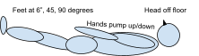
- Calf and hamstring stretch with band. First right leg, then left leg - count breathing (13) on calf and hamstring, then count repetitions (23 - 1 down, 2 up, …) of lowering and lifting leg.
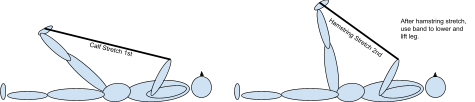
- Flitter-flutter Butterfly and Foot Rub - no counting - flap knees like a butterfly. Flitter-flutter butterfly. Can I catch you if I try. Flitter over flower beds. Flitter up above my head.
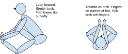 - Curl Ups - knees straight, touch toes, roll back as you return to back. count curl ups (43)
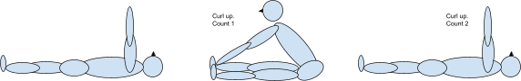
- Long Arm Sweeps - count arm sweeps (23). Sweep from side to overhead to side is 1 count.
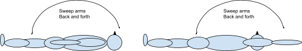 - Five Knee/Let Crunches - alternate knees crunches (16 - count each knee up), knees together crunches (16 - count up 1 down 2 …), alternate leg lifts (16 - count each up), legs together lift (16 - count up 1 down 2 …), elbow to opposite knee (23 - count each knew touch)
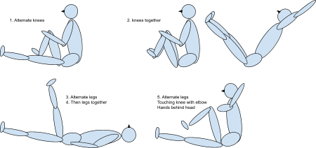 - Ankle Rolls - count ankle rolls (23 clockwise, 23 counter-clockwise, 34 up-down - on each ankle). Roll and up-down rapidly.
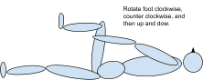
- Two leg back arch with long arm sweeps - count sweeps (23), one leg back arch with bird arm flaps - count flaps (11 right leg up, 11 left leg up), and two leg back arch with under back stretch of arms - count breathing (23).
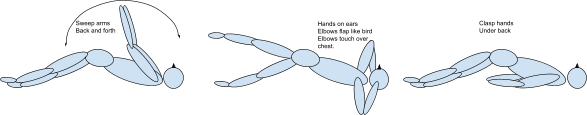 - Flitter-flutter Butterfly and Foot Rub - no counting - flap knees like a butterfly.
- Back Stretch with Band - count breathing (16)
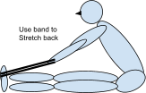 - Dog-cat Rolls - count dog-cat rolls (23 or 34). Each movement from Cat to Dog and back to Cat is one count.
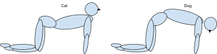 - Pushups and T Formations - count push ups, count breathing in T formation - 20 pushups, left arm T, 20 pushups, right arm T, and 20 pushups. 13 breaths in T formation
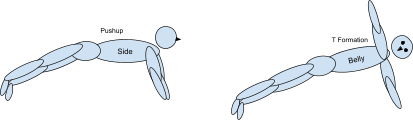 - Crawl to Creep to Crawl - 8 times
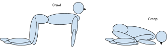 - Creep to Praise to Creep - 8 times
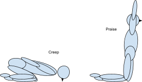 - Hip Stretches (no counting) and Rock-a-bye Baby - count rock-a-byes (16)
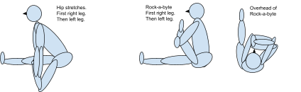 - Back Roll – seal and knee bend - count rolls (34 seal, 21 knee bend) - 55 total rolls. Start in seal and transition to knee bend without stopping. On the last roll continue all the way to the bent position of the next exercise.
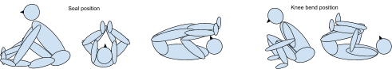 - Upside Down Back Stretches (knees bent, knees straight, legs straight up), leg scissors, and leg bicycle, stretch up high - count breathing, count leg movement (55 scissors, 34 bicycle)
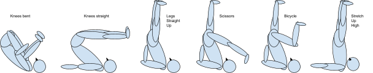 - Classic Pilates Position - count breathing (34)
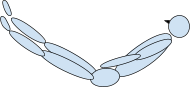 - Dumbbell Lift - only when home - count dumbbell lifts (34 on each arm)
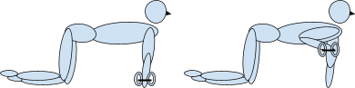 - Downward Dog - count breathing (16)
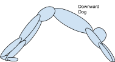 - Stork Balance on Each Leg - count breathing (16)
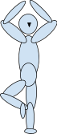